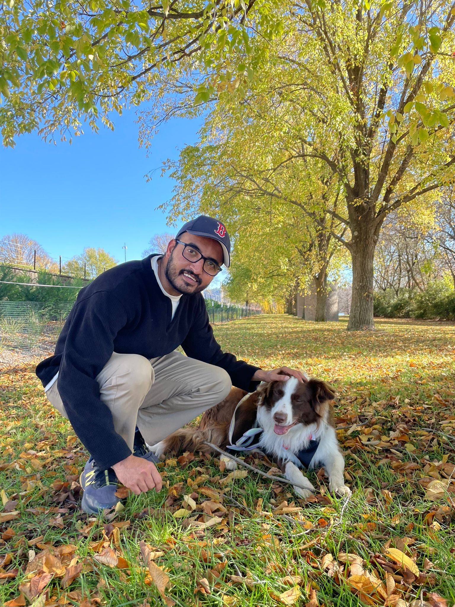

About Me
I'm Purav Mehta, a Chartered Accountant and graduate of the Australian Institute of Company Directors (GAICD). My journey bridges the traditional worlds of finance and risk management with the cutting edge of data science and AI automation.
With extensive experience in financial modeling, statistical analysis, and strategic decision-making, I've developed a unique perspective on how technology can transform business operations. I specialize in building intelligent automation workflows using tools like n8n, creating data-driven solutions that make complex processes simple and efficient.
But life isn't just about numbers and code. Meet Beiz (pronounced BAYZ) - my Border Collie and constant companion. Beiz reminds me daily about the importance of balance, resilience, and finding joy in both work and play. Whether we're tackling new challenges or exploring new trails, Beiz embodies the adaptability and focus that I bring to every project.
My mission is simple: bridge the gap between traditional business practices and modern technology, creating solutions that are both powerful and accessible to everyone.

